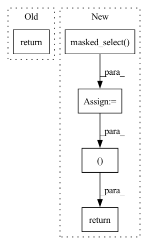

Pattern ID :865

Before Change
l1_loss = l1_loss.mul(out_weights).masked_select(out_masks).sum()
duration_loss = (duration_loss.mul(duration_weights).masked_select(duration_masks).sum())
return l1_loss, duration_loss
After Change
// apply weight
l1_loss = l1_loss.mul(out_weights).masked_select(out_masks).sum()
duration_loss = (duration_loss.mul(duration_weights).masked_select(duration_masks).sum())
pitch_loss = pitch_loss.mul(variance_weights).masked_select(variance_masks).sum()
energy_loss = (energy_loss.mul(variance_weights).masked_select(variance_masks).sum())
return l1_loss, duration_loss, pitch_loss, energy_loss
In pattern: SUPERPATTERN
Frequency: 3
Non-data size: 5
Instances
Fragment ID: 4263489
Project Name: digitalphonetics/ims-toucan
Commit Name: 116b9c3f51fb74738622ec2ce379e42f9e478498
Time: 2023-03-11
Author: lux.florian@gmail.com
File Name: TrainingInterfaces/Text_to_Spectrogram/ToucanTTS/ToucanTTSLoss.py
M Class Name: ToucanTTSLoss
N Class Name: ToucanTTSLoss
M Method Name: forward(12)
N Method Name: forward(8)
M Parent Class: torch.nn.Module
N Parent Class: torch.nn.Module
M File Name: TrainingInterfaces/Text_to_Spectrogram/ToucanTTS/ToucanTTSLoss.py
N File Name: TrainingInterfaces/Text_to_Spectrogram/ToucanTTS/ToucanTTSLoss.py
M Start Line: 50
M End Line: 53
N Start Line: 20
N End Line: 66
'>
Before Change
setattr(interaction, "pos_len_list", pos_len_list)
setattr(interaction, "user_idx_list", user_idx_list)
return interaction, scores
def evaluate(self, eval_data, load_best_model=True, model_file=None):
if load_best_model:
After Change
ones_tensor = torch.ones(batch_size, dtype=torch.bool, device=self.device)
used_mask = ones_tensor.index_fill(dim=0, index=used_idx, value=0)
neg_scores = scores.masked_select(used_mask)
neg_scores = torch.split(neg_scores, neg_len_list, dim=0)
final_scores = list(itertools.chain.from_iterable(zip(pos_scores, neg_scores)))
final_scores = torch.cat(final_scores)
setattr(interaction, "pos_len_list", pos_len_list)
setattr(interaction, "user_len_list", user_len_list)
return interaction, final_scores
def evaluate(self, eval_data, load_best_model=True, model_file=None):
if load_best_model:
'>
Fragment ID: 4263504
Project Name: rucaibox/recbole
Commit Name: efaf2d8c84961b5042c0d42e08e56a59f064f267
Time: 2020-08-05
Author: houyupeng@ruc.edu.cn
File Name: trainer/trainer.py
M Class Name: Trainer
N Class Name: Trainer
M Method Name: _full_sort_batch_eval(2)
N Method Name: _full_sort_batch_eval(2)
M Parent Class: AbstractTrainer
N Parent Class: AbstractTrainer
M File Name: trainer/trainer.py
N File Name: trainer/trainer.py
M Start Line: 186
M End Line: 212
N Start Line: 187
N End Line: 211
'>
Before Change
// apply weight
l1_loss = l1_loss.mul(out_weights).masked_select(out_masks).sum()
return l1_loss
After Change
// apply weight
l1_loss = l1_loss.mul(out_weights).masked_select(out_masks).sum()
duration_loss = (duration_loss.mul(duration_weights).masked_select(duration_masks).sum())
return l1_loss, duration_loss
'>
Fragment ID: 4263499
Project Name: digitalphonetics/ims-toucan
Commit Name: b8532b46fafdc2f07c5ce57d6b7711db0682be18
Time: 2023-03-09
Author: lux.florian@gmail.com
File Name: TrainingInterfaces/Text_to_Spectrogram/ToucanTTS/ToucanTTSLoss.py
M Class Name: ToucanTTSLoss
N Class Name: ToucanTTSLoss
M Method Name: forward(8)
N Method Name: forward(5)
M Parent Class: torch.nn.Module
N Parent Class: torch.nn.Module
M File Name: TrainingInterfaces/Text_to_Spectrogram/ToucanTTS/ToucanTTSLoss.py
N File Name: TrainingInterfaces/Text_to_Spectrogram/ToucanTTS/ToucanTTSLoss.py
M Start Line: 35
M End Line: 43
N Start Line: 19
N End Line: 53